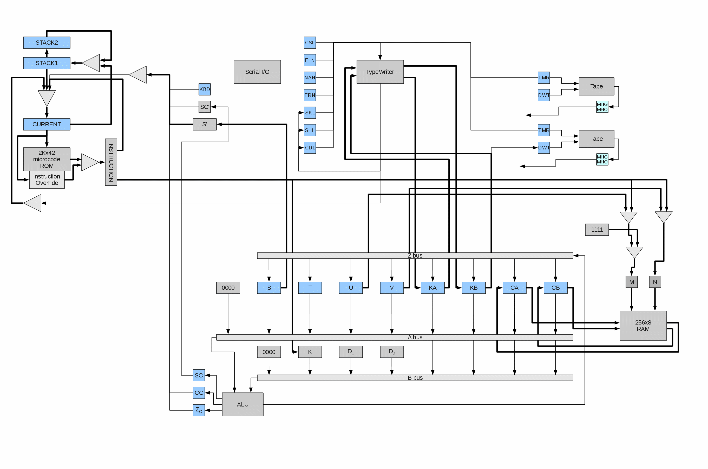
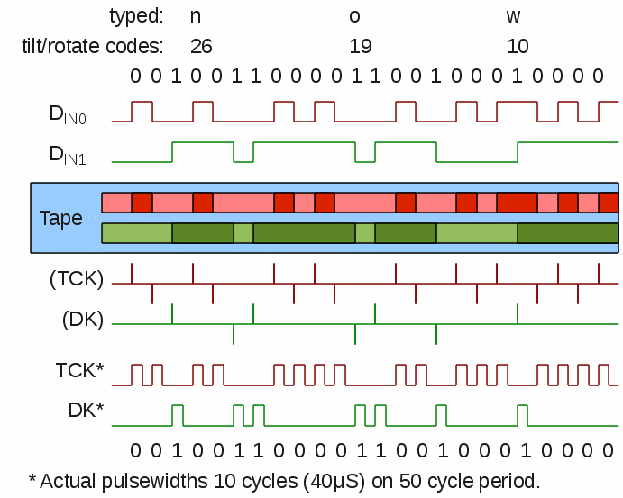

In the above diagram, fine lines represent single-bit (and serial) data paths,
while thicker lines represent multiple bits of data in parallel (typically 4).
Note, the hardware implements both parallel and serial paths,
depending on registers and access operations.
Hardware Registers
The registers in the block diagram are explained here:
| Reg Name | Num Bits | Access | Meaning/Use | |
|---|---|---|---|---|
| S | 4 | R/W | Machine State * | |
| T | 4 | R/W | Memory Address, Hi * | |
| U | 4 | R/W | Memory Address, Mid * | |
| V | 4 | R/W | Memory Address, Lo * | |
| KA | 4 | R/W | Input Data, Hi * | |
| KB | 4 | R/W | Input Data, Lo * | |
| CA | 4 | R/W | Data to/from RAM * | |
| CB | 4 | R/W | Data to/from RAM | |
| TO | 4 | W/O | Expansion Output, Hi | |
| RO | 4 | W/O | Expansion Output, Lo | |
| M | 4 | n/a | Current Memory Address, Mid | |
| N | 4 | n/a | Current Memory Address, Lo | |
| CC | 1 | n/a | Internal Carry Flag | |
| Zo | 1 | n/a | Zero Flag | |
| SC | 1 | n/a | Carry Flag | |
| S' | 4 | n/a | Saved S | |
| SC' | 1 | n/a | Saved SC | |
| OV | 1 | n/a | Prog Error | |
| ERR | 1 | n/a | Mach Error | |
| KBD | 1 | n/a | Key Pressed (input ready) | |
| TMR | 1 | W/O | Tape Motor Relay | |
| DWT | 1 | W/O | Tape Write (record) Data | |
| MHG/MHO | 1 | R/O | Tape Read Data (one-shot) | |
| RBS | 1 | R/O | CN-24 Ack (on device) | |
| CURRENT | 11 | n/a | Current Instruction Address | |
| STACK1 | 10 | n/a | Top of Stack | |
| STACK2 | 10 | n/a | 2nd on Stack | |
| * Also used as general purpose registers, when non-conflicting | ||||
Microcode execution happens continuously, as long as the calculator has power. Each instruction contains the address of the next instruction, so there is no traditional "Instruction Counter" that increments. There is a "current instruction address" register, and two stack registers, used to control the flow of the microcode. In addition, certain keyboard conditions cause a hard-coded address to be forced into the current address register.
In normal operation, the current address is applied to the ROM and the resulting 42-bit word is latched into the instruction register. For normal instructions, the "next address" field of the instruction is fed-back into the current address register, with the low-order 2 bits coming from a decoding of the condition address fields, JL and JH.
For "call" instructions, the previous value of the current address register is saved into the "STACK1" register, also saving the "STACK1" previous contents into "STACK2".
For "return" instructions, the contents of the "next address" field is ignored and the current address register is loaded from STACK1 with the low-order bit forced to "1", and STACK1 is loaded form STACK2.
Note, a return instruction always returns to the odd address after the call-from address. This means that call instructions should always be at even addresses.
Microcode instruction execution sequence is terminated, and a new instruction address is forced, when certain keys are pressed. Because this is handled in hardware, these keys will immediately terminate any routine in progress and force the calculator to jump to the function programmed for that key.
| Key | RESET * | REWIND | FORWARD | (STOP) | (APR) |
|---|---|---|---|---|---|
| uCode Address |
000 | 001 | 002 | 003 | 004 |
In addition, the microcode logic allows for hard-wired overriding of certain instructions. There are 12 locations reserved for overrides.
TBD what the overrides do.
Microcode Instruction Timing
The system clock starts with a 4MHz crystal that feeds a flip-flop (producing a 2MHz signal), and a 5-bit Johnson Counter producing a series of "phase" clocks which repeat at 400KHz. One microcode instruction is entirely executed within the Johnson Counter cycle. This establishes the microcode instruction time (a "cycle") of 2.5uS, or 400,000 instructions per second.
The phase-clock signals, in combination with the 4MHz and 2MHz clocks, orchestrate the operation of the calculator. Early pulses are used to prepare hardware and save ("freeze") data, middle pulses are used to serially transfer data around the calculator registers, and late pulses are used to finish-up and finalize operations (such as accessing RAM or loading the next microcode instruction). Here are some key timing signals:
The instruction cycle is divided into three main phases: Early Latching, Serial Data Transfer, and Late Latching. The following activities are performed in the various phases:
| Early Latching |
Machine State saved: S' = S SC' = SC |
| T,U,V latched to memory address decoders L,M,N * | |
| Serial Data Transfer |
Data shifted over A, B, and Z buses, to/from selected registers and through ALU * |
| "return" pop stack * | |
| "call" push stack * | |
| Late Latching |
RAM = CA * |
| CA = RAM * | |
| CB = ROM * | |
| CURRENT = next | |
| TO,RO = keyboard/peripheral * | |
| * Activities are dependent on selected microcode ops of instruction | |
Some notes on timing:
In summary, interpreting (and writing) microcode instructions requires careful consideration of these timing anomalies.
Editor's Note: While the schematics seem to imply that input data is forced into KA and KB on every instruction while KBD == 1, proper operation seems to dictate the KA and KB are latched only on instructions that use KBD in a conditional address (JL == 110). Also, unlike the schematics, KBD must be reset when JL == 110 and not exclusively by ST == 1001 (RESET).
Here is some sample microcode
Microcode Instruction Format
Each microcode instruction is 42 bits long. The instruction fields are
as follows (layout for Solid State ROM).
| Loc | L27 | L26 | L25 | L24 | L23 | L22 | L21 | L20 | L17 | L19 | L18 | |||||||||||||||||||||||||||||||||
|---|---|---|---|---|---|---|---|---|---|---|---|---|---|---|---|---|---|---|---|---|---|---|---|---|---|---|---|---|---|---|---|---|---|---|---|---|---|---|---|---|---|---|---|---|
| ROMs | CM5910 | CM5920 | CM5930 | CM5940 | CM5950 | CM5960 | CM5970 | CM5980 | CM5990 | CM6000 | CM6010 | |||||||||||||||||||||||||||||||||
| Bits | 41 | 40 | 39 | 38 | 37 | 36 | 35 | 34 | 33 | 32 | 31 | 30 | 29 | 28 | 27 | 26 | 25 | 24 | 23 | 22 | 21 | 20 | 19 | 18 | 17 | 16 | 15 | 14 | 13 | 12 | 11 | 10 | 9 | 8 | 7 | 6 | 5 | 4 | 3 | 2 | 1 | 0 | - | - |
| Fields | AI | BI | ZO | AOP | AC | BC | MOP | KK | ST | SUB | JAD | JH | JL | - | ||||||||||||||||||||||||||||||
| Locations shown for logiblock 6293 | ||||||||||||||||||||||||||||||||||||||||||||
The instruction fields have the following effects on the hardware.
The notation REG<n> refers to Bit "n" of register "REG".
| KK | |
|---|---|
| XXXX | Immediate operand |
|
|
| |||||||||||||||||||||||||||||||||||||||||||||||
| |||||||||||||||||||||||||||||||||||||||||||||||||
|
|
| ||||||||||||||||||||||||||||||||||||||||||||||||||||||||||||||||||||||||||||||||||||||||||||||||||||||||||||||||||||||||||||||||
| MOP | KK | BI | function |
|---|---|---|---|
| 0111 | xxx1 | CSL = BI<0> | |
| xx1x | ELN = BI<0> | ||
| x1xx | ERN = BI<0> | ||
| 1xxx | NAN = BI<0> | ||
| 1000 | x1xx | xxx0 | Print TO<1:0>,RO<3:0> * |
| xxx1 | Typewriter carriage function * | ||
| 1001 | x000 | KA = x ; x ; ORG ; ADJ | |
| x001 | KA = Lo nibble serial data in | ||
| x010 | KA = Hi nibble serial data in | ||
| x011 | KA = LCB/LCA ; PE ; DR ; (timing) | ||
| x100 | KA = TRE ; SHC ; PRINT ; ATTN | ||
| x101 | n/a | ||
| x110 | n/a | ||
| x111 | n/a | ||
| 1111 | x000 | UART function | |
| x001 | UART function | ||
| x010 | UART function | ||
| x011 | UART function | ||
| x100 | UART function | ||
| x101 | UART function | ||
| x110 | UART function | ||
| x111 | UART function | ||
| * TO,RO = KA,KB | |||
|
|
| ||||||||||||||||||||||||||||||||||||||||||||||||||||||||||||||||
| MXA | TMR & LEFT |
| MXB | |
| MXC | |
| MXD | |
| MXE | TMR & RIGHT |
| MXF | |
| MXG | |
| MXH |
| KA | KB | ||||||||
|---|---|---|---|---|---|---|---|---|---|
| 3 | 2 | 1 | 0 | 3 | 2 | 1 | 0 | ||
| MOP == 0111 | Out | n/a | n/a | ||||||
| MOP == 1010 | In | n/a | SKB0 | PSKB1 | LOP | ROP | |||
| MOP == 1011 | Out | n/a | n/a | WDT | |||||
| MOP == 1100 | In | n/a | RHS | LHS | R/B | L/S | |||
| MOP == 1001 | In | n/a | KR/B | ORG | ADJ | n/a | |||
| JL == 110 | In | Key/Periph Hi | Key/Periph Lo | ||||||
| D1 | D2 | |||||||||||||||||||||
|---|---|---|---|---|---|---|---|---|---|---|---|---|---|---|---|---|---|---|---|---|---|---|
| 3 | 2 | 1 | 0 | 3 | 2 | 1 | 0 | |||||||||||||||
| TRANS. | RECORD | DOUBLE | RIGHT | * | SKIP | |||||||||||||||||
| !TRANS. & !RECORD = PLAY | *
| |||||||||||||||||||||
| D2 is cleared when read (BI=3) | ||||||||||||||||||||||
| Memory Usage (Model 600-14) | ||
|---|---|---|
| RAM Address | Reg # | Purpose |
| 0xfff - 0xff0 | 15 15 | System State |
| 0xfef - 0xfe0 | 15 14 | Display Register |
| 0xfdf - 0xfd0 | 15 13 | Sci Notation Display |
| 0xfcf - 0xfc0 | 15 12 | Floating Point Display |
| 0xfbf - 0xfb0 | 15 11 | Learn Mode Display |
| 0xfaf - 0xfa0 | 15 10 | Temp Register |
| 0xf9f - 0xf90 | 15 09 | Temp Register |
| 0xf8f - 0xf80 | 15 08 | Prog Subr Stack |
| 0xf7f - 0xf70 | 15 07 | Prog Subr Stack |
| 0xf6f - 0xf60 | 15 06 (246) | Steps 0000 - 0007 |
| 0xf5f - 0xf60 | 15 05 (245) | Steps 0008 - 0015 |
| 0xf4f - 0xf60 | 15 04 (244) | Steps 0016 - 0023 |
| ... etc ... | ||
| 0x12f - 0x120 | 01 02 (18) | Steps 1824 - 1831 |
| 0x11f - 0x110 | 01 01 (17) | Steps 1832 - 1839 |
| 0x10f - 0x100 | 01 00 (16) | Steps 1840 - 1847 |
| 0x0ff - 0x0f0 | 00 15 (15) | GP Reg, Left |
| 0x0ef - 0x0e0 | 00 14 (14) | GP Reg, Right |
| 0x0df - 0x0d0 | 00 13 (13) | GP Reg |
| 0x0cf - 0x0c0 | 00 12 (12) | GP Reg |
| 0x0bf - 0x0b0 | 00 11 (11) | GP Reg |
| 0x0af - 0x0a0 | 00 10 (10) | GP Reg |
| 0x09f - 0x090 | 00 09 (9) | GP Reg |
| 0x08f - 0x080 | 00 08 (8) | GP Reg |
| 0x07f - 0x070 | 00 07 (7) | GP Reg |
| 0x06f - 0x060 | 00 06 (6) | GP Reg |
| 0x05f - 0x050 | 00 05 (5) | GP Reg |
| 0x04f - 0x040 | 00 04 (4) | GP Reg |
| 0x03f - 0x030 | 00 03 (3) | GP Reg |
| 0x02f - 0x020 | 00 02 (2) | GP Reg |
| 0x01f - 0x010 | 00 01 (1) | GP Reg * |
| 0x00f - 0x000 | 00 00 (0) | GP Reg * |
| * Certain commands depend on values in registers 0 and 1. For example, plotting commands expect 0 to contain the Y delta, and 1 the X delta | ||
| System State Memory Usage | |||||
|---|---|---|---|---|---|
| RAM Address | T,U,V | 3 | 2 | 1 | 0 |
| 0xfff | 15,15,15 | - | - | - | Keyboard Trace |
| 0xffe | 15,15,14 | scratch | |||
| 0xffd | 15,15,13 | - | - | Group I/O | Program Trace |
| 0xffc | 15,15,12 | unused? | |||
| 0xffb | 15,15,11 | Prog Subr Stack Level | |||
| 0xffa | 15,15,10 | Prefix State | |||
| 0xff9 | 15,15,9 | unknown | |||
| 0xff8 | 15,15,8 | KB Keyboard code | |||
| 0xff7 | 15,15,7 | KA Keyboard code | |||
| 0xff6 | 15,15,6 | Tape Bit | |||
| 0xff5 | 15,15,5 | Tape Word | |||
| 0xff4 | 15,15,4 | Number Entry State | |||
| 0xff3 | 15,15,3 | Prefix | ROM | Stop | Run |
| 0xff2 | 15,15,2 | P.C. Mem Addr, L | |||
| 0xff1 | 15,15,1 | P.C. Mem Addr, M | |||
| 0xff0 | 15,15,0 | P.C. Mem Addr, H | |||
| 00 = SEARCH | 08 = CALL |
| 01 = RECALL | 09 = MARK |
| 02 = PRINT | 10 = STORE |
| 03 = I/O | 11 = ALPHA |
| 04 = SEARCH ROM (15 03) | 12 = INDIR |
| 05 = SEARCH ROM (15 04) | 13 = CALL ROM |
| 06 = SEARCH ROM (15 05) | 14 = GROUP 1 |
| 07 = SEARCH ROM (15 06) | 15 = GROUP 2 |
| 00 = Not currently entering number |
| 01 = Mantissa, whole part |
| 03 = Exponent |
| 04 = Mantissa, fractional part |
| 15 = Set P.C. |
| Prog Subr Stack | |||
|---|---|---|---|
| RAM Address | T,U,V | Use | |
| 0xf8c - 0xf8f | 15,8,12-15 | Level 3 | |
| 0xf88 - 0xf8b | 15,8,8-11 | Level 2 | |
| 0xf84 - 0xf87 | 15,8,4-7 | Level 1 | |
| 0xf83 | 15,8,3 | Level 0 | P.C. Mem Addr, L |
| 0xf82 | 15,8,2 | P.C. Mem Addr, M | |
| 0xf81 | 15,8,1 | P.C. Mem Addr, H | |
| 0xf80 | 15,8,0 | Mode (15,15,3) | |
| 0xf7c - 0xf7f | 15,7,12-15 | Level 7 | |
| 0xf78 - 0xf7b | 15,7,8-11 | Level 6 | |
| 0xf74 - 0xf77 | 15,7,4-7 | Level 5 | |
| 0xf70 - 0xf73 | 15,7,0-3 | Level 4 | |
| Note, P.C. Mem Addr points to the calling step, not the step to return to. | |||
Because magnetic media only works when there are changes in magnetic fields, the encoding had to ensure that the magnetic field changed frequently. This means that, for example, a long string of zeroes must not result in a long period of blank tape. Instead, there is guaranteed to be a transition at the beginning of every bit, and a transition in the middle if the bit was a "1". This is known as "Biphase-Mark" encoding or BMC, a variation of Differential Manchester encoding. This is also the same encoding that was known as "FM" and used for single-density floppy disks, as well as other magnetic media of the time. A parity bit was added every 4 data bits to help detect errors.
The timing of each bit was precise, because the tape read code had to be able to stay synchronized without saving state information or doing much processing. Each unit of output was 198 cycles (data bit width 396), and each program (tape image) was preceded by a 211,220 cycle (approximately 0.5 second) blank gap (no magnetic field transitions).
During read, the calculator waits for the "bit start" transition, then delays 272 cycles before sampling again. If the sample reveals that there was a second transition, then the bit is considered a "1", otherwise it is "0". From this stream, the calculator assembles nibbles and checks parity, loading data into memory.
Here is an example of writing 09 00 to tape and reading it back:

The code 09 00 is broken into two nibbles, and each assigned an odd parity bit. Then each 5 bit datum is encoded into the tape stream by converting "1" into either "1 0" or "0 1", and "0" into either "1 1" or "0 0", depending on the previous data to ensure that there is always a transition at the beginning of each bit. The resulting stream is fed to the record head and produces alternating segments of positive and negative magnetic fields on the tape.
During read, the changes between positive and negative magnetic fields show up as "blips" in the signal from the tape read head. These blips are fed into a "one-shot" flip-flop whose timing is set to about 97 cycles. This means that for 97 cycles after a transition there will be a "1" signal, and it will return to "0" after those 97 cycles.
The calculator monitors the signal from the one-shot. The first "1" it sees indicates the beginning of a bit. It then delays 272 cycles and checks the signal again. If it is still "1" (was actually re-triggered by a second transition) then the data bit is interpreted to be a "1". Otherwise, the data bit is interpreted to be "0". These bits are assembled into a 4-bit word and a parity bit, which is then checked for odd parity and, if correct, the data word is stored in memory.
A parity error will cause the calculator to turn on the Mach Error flag (ERR) and stop processing the tape.
Other problems with the tape will generally cause the calculator to "hang" with a blank display. Pressing PRIME is usually required in order to recover.
The calculator reads/writes the tape at about 1000 bits/second. Assuming standard tape speed, this makes a tape density of about 533 bpi (compare to mainframe "9-track" tapes which were 800 or 1600 bpi, and later 6250 bpi). The smallest common audio cassette was 15 minutes (C15) which would hold an overwhelming 90,000 program steps (on both sides) or 45 complete copies of the calculator memory (a program rarely consumed all of memory). For this reason, Wang data cassettes were much shorter, typically only having a few minutes of tape.